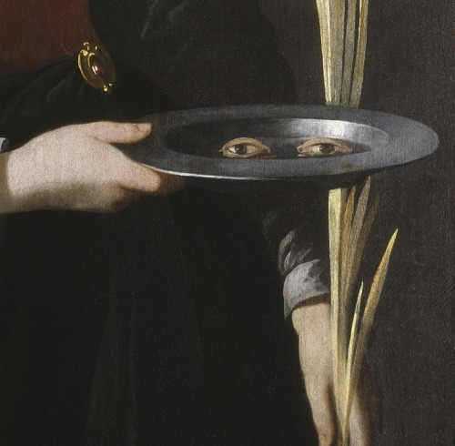
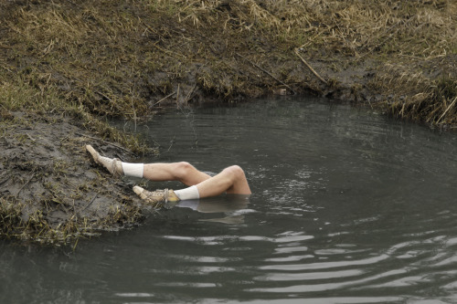
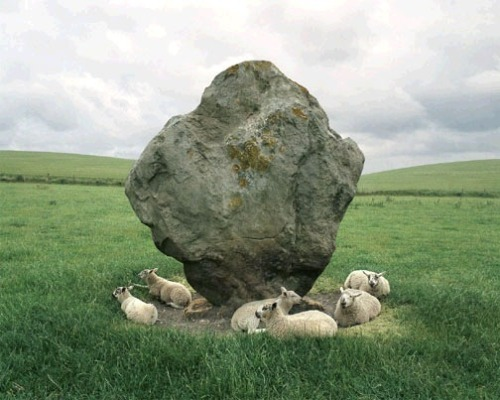
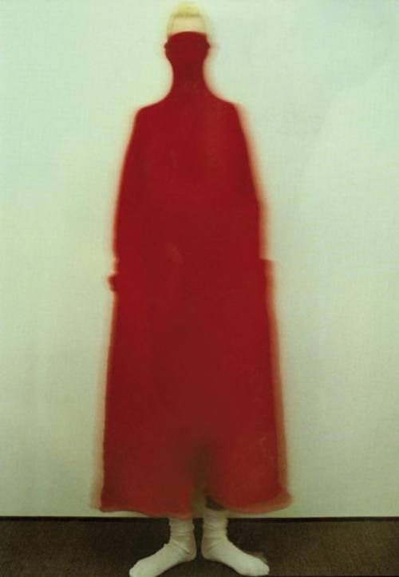

Contact
For any inquiries, tips, or commissions: janavikumar@proton.me



For any inquiries, tips, or commissions: janavikumar@proton.me

I am a data analyst and freelance journalist based in NYC. My focus is on climate, migration, and social justice issues.
I have contributed to Documented, The Indypendent, and The Santa Barbara Independent.
Previously, I was a Research Assistant at the Columbia Climate School and am currently working as a data analyst in New York City.
Reach me at janavikumar@proton.me
A selection of data journalism, visualizations, and research projects. Tools include Python, R, SQL, and D3.js.